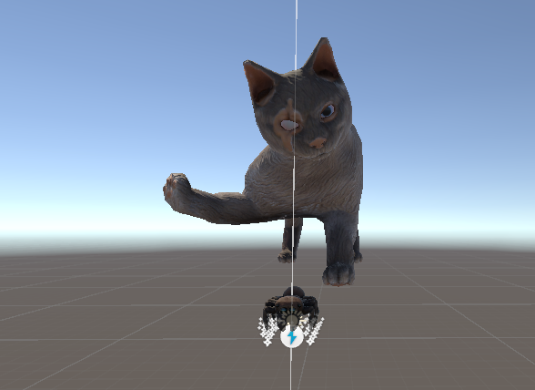
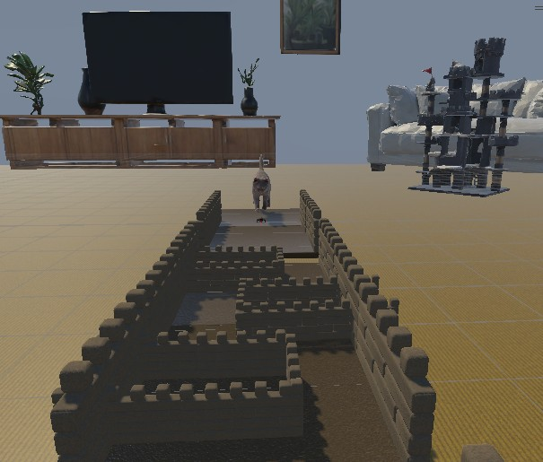

Sir Threadrick
Three Thing Game Jam Game
Overview
This game was created as part of a "Three thing game" jam, my teams words were "Castle", "Spider" and "Chasing"
Process & Features
- Planning: Standup meeting at the beginning of the game jam to plan out the game. Further planning happened during development time.
- Development: Agile development over a one-week sprint period.
- Deployment: All changes were pushed to a GitHub repository and at the end of the game jam it was posted on itch.io
Tech Stack
- Unity
- GitHub
Screenshots


Challenges & Learnings
Random Level Generation: The different segments of the game are selected randomly, a significant amount of time was spent ensuring that the spacing between each segment was correct. Now I am more confident in creating a user-friendly system to create random level generation.
Animations: I implemented the animations for the main character and the antagonist. I had to work with the designer to ensure the speed of the animations were as intended.